Good Morning PEERS!
una.github.io/nom-nom-perf
@una


Make something people love
people don't hate
per·for·mance
/pərˈfôrməns/
an action, task, or operation, seen in terms of how successfully it was performed
Performance is Our Biggest Job
Beautiful != Useable
Useable > Beautiful
Amazon's calculated that a page load slow-down of just one second could cost it $1.6 billion in sales each year.
Google has calculated that by slowing its search results by just four tenths of a second they could lose 8 million searches per day.

According to surveys done by Akamai and Gomez.com, nearly half of web users expect a site to load in 2 seconds or less, and they tend to abandon a site that isn’t loaded within 3 seconds.
1/4 internet users abandon a page that takes more than 4 seconds to load
73% of mobile internet users say that they’ve encountered a website that was too slow to load.
51% of mobile internet users say that they’ve encountered a website that crashed, froze, or received an error.
More like 100% of users. Am I right?
It's about Neuroscience
Web Stress
The Doorway Effect


UX Architecture
Content Strategy
Your Product IS Your Content
Do I really need that?
What Is the Main Goal Here?
What Next?
UI Design
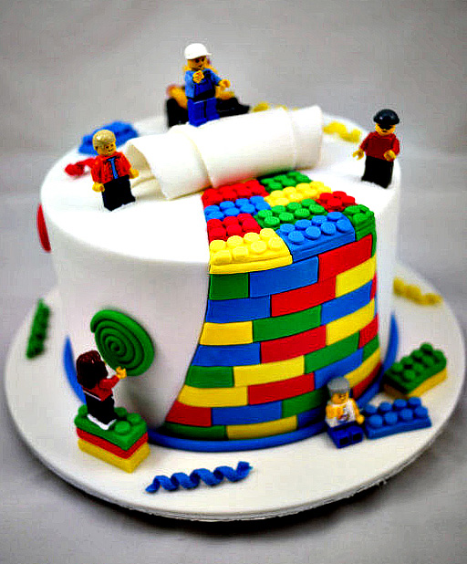Image Types
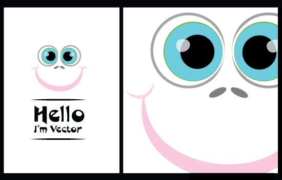Image Types
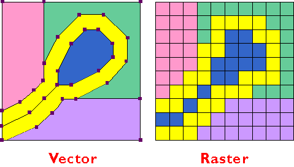File Types
jpg
png-8
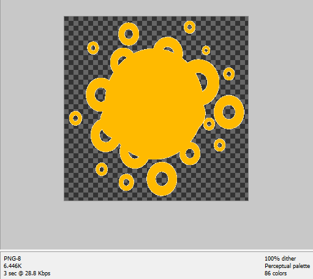png-24
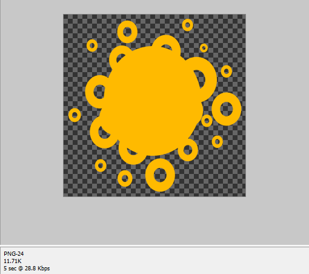gif

svg

"Never put an image on the web that you haven't optimized"
Compression Tools
Won't That Make My Beautiful Images Look Terrible And Pixelated!?
Compressive Images
 Further Reading: Filament Group on Compressive Images
Further Reading: Filament Group on Compressive Images

size: 109kb
size: 49kb
size: 109kb
size: 49kb
Progressive Jpegs: A Blast from the Past
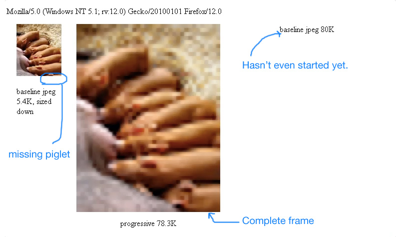Retina Images
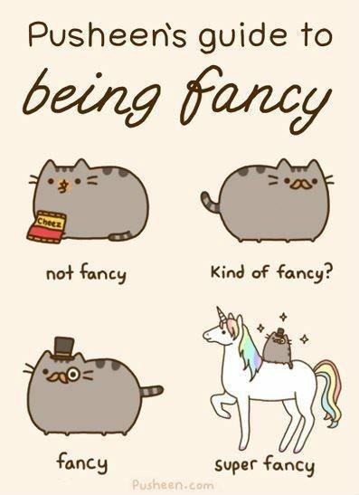Do I really need that?
Jank!
60 FPS FTW

Layout Thrashing
Avoid the dreaded document reflow!

Flexbox > Older Layout Models


-10.751ms
Front End Development
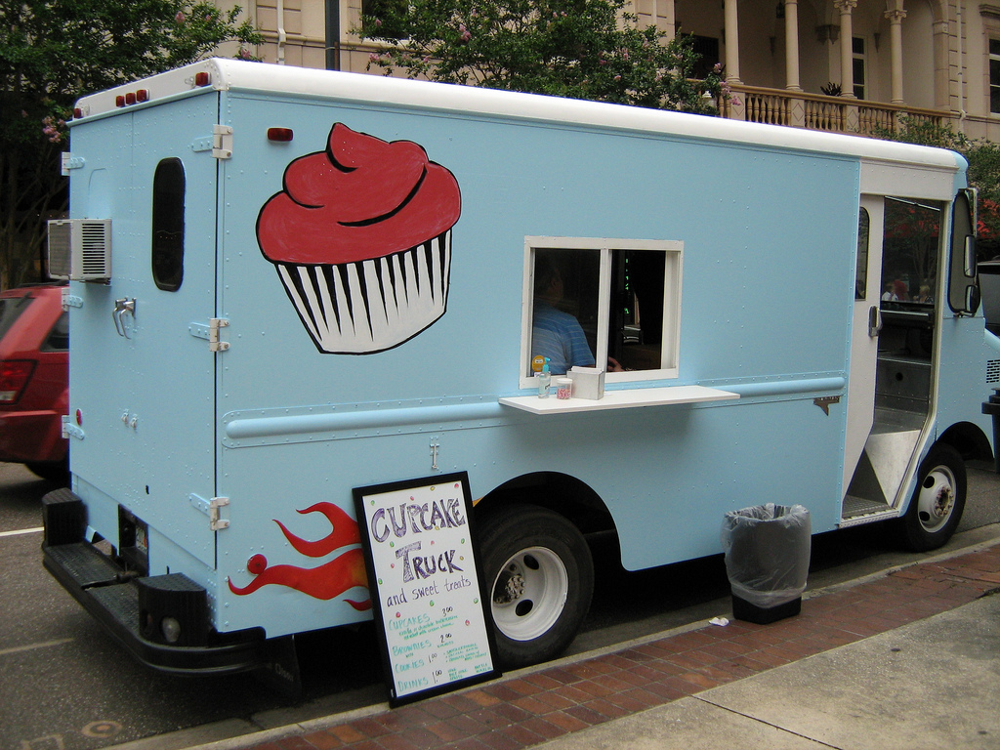
CMAT
Concatenate
Minify
Async
Test
C: Concatenate
Pull your files into one to minimize requests.
Images

CSS
@import 'vendors/bootstrap';
@import 'vendors/jquery-ui';
@import 'utils/variables';
@import 'utils/functions';
@import 'utils/mixins';
@import 'utils/placeholders';
@import 'base/reset';
@import 'base/typography';
@import 'layout/navigation';
@import 'layout/grid';
@import 'layout/header';
@import 'layout/footer';
@import 'layout/sidebar';
@import 'layout/forms';
@import 'components/buttons';
@import 'components/carousel';
@import 'components/cover';
@import 'components/dropdown';
@import 'pages/home';
@import 'pages/contact';
@import 'themes/theme';
@import 'themes/admin';Javascript
var concat = require('gulp-concat');
gulp.task('scripts', function() {
gulp.src(['./lib/file3.js', './lib/file1.js', './lib/file2.js'])
.pipe(concat('all.js'))
.pipe(gulp.dest('./dist/'))
});The fastest HTTP request is the one not made.
M: Minify
Make those files as small as possible.
Images
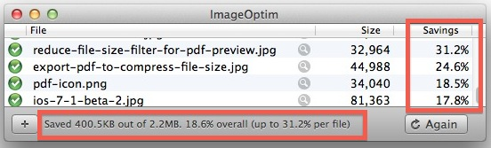
CSS
body,fieldset,form,html,legend,li,ol,ul{margin:0;padding:0}h1,h2,h3,h4,h5,h6,p{margin-top:0}fieldset,img{border:0}legend{color:#000}li{list-style:none}sup{vertical-align:text-top}sub{vertical-align:text-bottom}table{border-collapse:collapse;border-spacing:0}caption,td,th{text-align:left;vertical-align:top;font-weight:400}input,select,textarea{font-size:110%;line-height:1.1}abbr,acronym{border-bottom:.1em dotted;cursor:help}*,:after,:before{margin:0;padding:0;-moz-box-sizing:border-box;-webkit-box-sizing:border-box;box-sizing:border-box}html{-webkit-font-smoothing:antialiased;height:100%}body{font-family:"Carrois Gothic",sans-serif;font-weight:400;padding:2em 10% 4em;max-width:1000px;margin:0 auto;background:#eef0f0;min-height:100%;position:relative}h1,h2,h3{font-family:"Fjalla One",serif;font-weight:700}h1{font-size:3.5em;margin-bottom:.25em;color:#5ab1bb}h2{color:#4e6766;font-family:"Carrois Gothic",sans-serif;text-transform:uppercase;font-size:.9em;letter-spacing:2px}Javascript
!function(a,b){"object"==typeof module&&"object"==typeof module.exports?module.exports=a.document?b(a,!0):function(a){if(!a.document)throw new Error("jQuery requires a window with a document");return b(a)}:b(a)}("undefined"!=typeof window?window:this,function(a,b){var c=[],d=c.slice,e=c.concat,f=c.push,g=c.indexOf,h={},i=h.toString,j=h.hasOwnProperty,k={},l="1.11.2",m=function(a,b){return new m.fn.init(a,b)},n=/^[\s\uFEFF\xA0]+|[\s\uFEFF\xA0]+$/g,o=/^-ms-/,p=/-([\da-z])/gi,q=function(a,b){return b.toUpperCase()};m.fn=m.prototype={jquery:l,constructor:m,selector:"",length:0,toArray:function(){return d.call(this)},get:function(a){return null!=a?0>a?this[a+this.length]:this[a]:d.call(this)},pushStack:function(a){var b=m.merge(this.constructor(),a);return b.prevObject=this,b.context=this.context,b},each:function(a,b){return m.each(this,a,b)},map:function(a){return this.pushStack(m.map(this,function(b,c){return a.call(b,c,b)}))},slice:function(){return this.pushStack(d.apply(this,arguments))},first:function(){return this.eq(0)},last:function(){return this.eq(-1)},eq:function(a){var b=this.length,c=+a+(0>a?b:0);return this.pushStack(c>=0&&b>c?[this[c]]:[])},end:function(){return this.critical rendering path:
/[krit-i-kuh l] [ren-der-ing] [path, pahth]/
The intermediate steps between receiving the HTML, CSS, and JavaScript bytes and the required processing to turn them into rendered pixels
A: Async
Manage How Your Scripts load with Async & Defer.
-
<script src="...">

-
<script src="..." async>
-
<script src="..." defer>
Critical CSS


"We don’t need to render the entire page in one second, [just] the above the fold content."
T: Test
Check Your Performance
Render. Display. Interact.
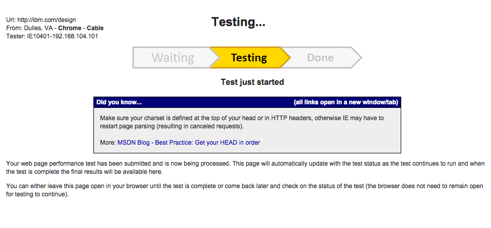Chrome Dev Tools
Network Panel
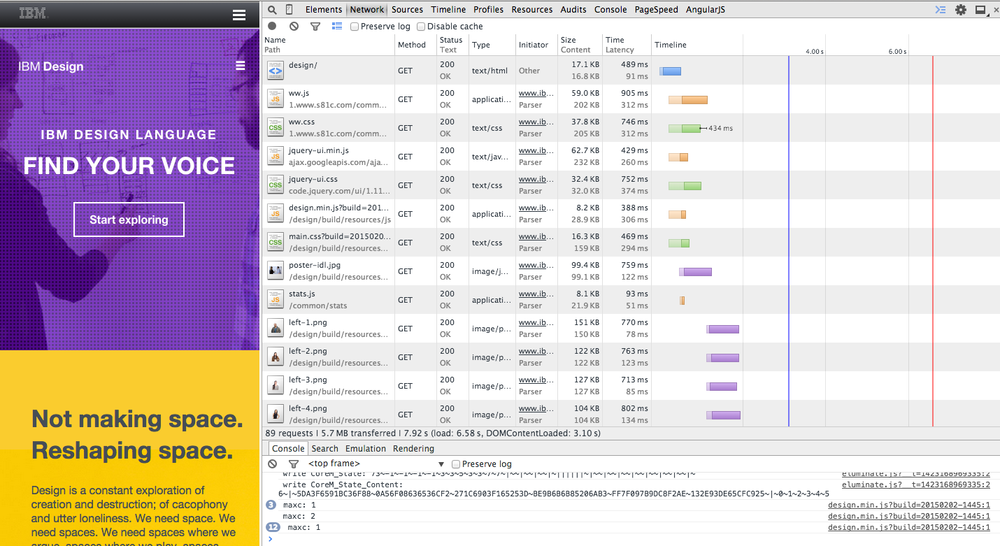Audits Panel
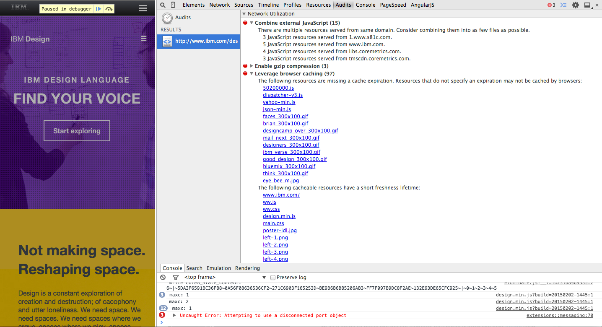pagespeedtest.org
page speed index:
/[peyj] [speed] [in-deks]/
some hippie math that tells you how fast it "feels" to load your website.
A Look at the Numbers:
- Time To First Byte: 200ms - 350ms
- DOM Content Loaded: 1000ms - 2000ms
- JS Load Event Fired: 900ms - 2200ms
- Total Download Size: 1MB - 2MB
- DNS Lookup: 10ms - 20ms
- HTTP Requests: 50 - 75
More Hipster Numbers:
- First Byte Time: 85
- Use persistent connection: 85
- Use gzip compression for transferring compressible responses: 90
- Compress Images: 90
- Use Progressive JPEGs: 90
- Leverage browser caching of static assets: 90
- Use a CDN for all static assets: 85
- Cited from Point North
Google PageSpeed Insights
Page Speed Insights Extension
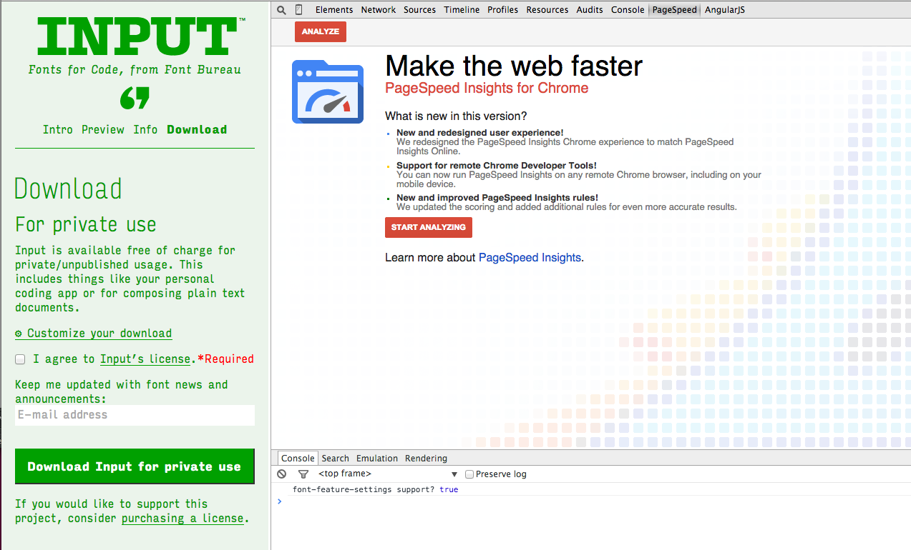Automate Your Performance Testing
Javascript Task Runners


Using Gulp
var gulp = require('gulp');
var psi = require('psi');
var site = 'http://www.html5rocks.com';
var key = '';
// Please feel free to use the `nokey` option to try out PageSpeed
// Insights as part of your build process. For more frequent use,
// we recommend registering for your own API key. For more info:
// https://developers.google.com/speed/docs/insights/v1/getting_started
gulp.task('mobile', function () {
return psi(site, {
// key: key
nokey: 'true',
strategy: 'mobile',
}, function (err, data) {
console.log(data.score);
console.log(data.pageStats);
});
});
gulp.task('desktop', function () {
return psi(site, {
nokey: 'true',
// key: key,
strategy: 'desktop',
}, function (err, data) {
console.log(data.score);
console.log(data.pageStats);
});
});
gulp.task('default', ['mobile']);
gulpThe Performance Budget